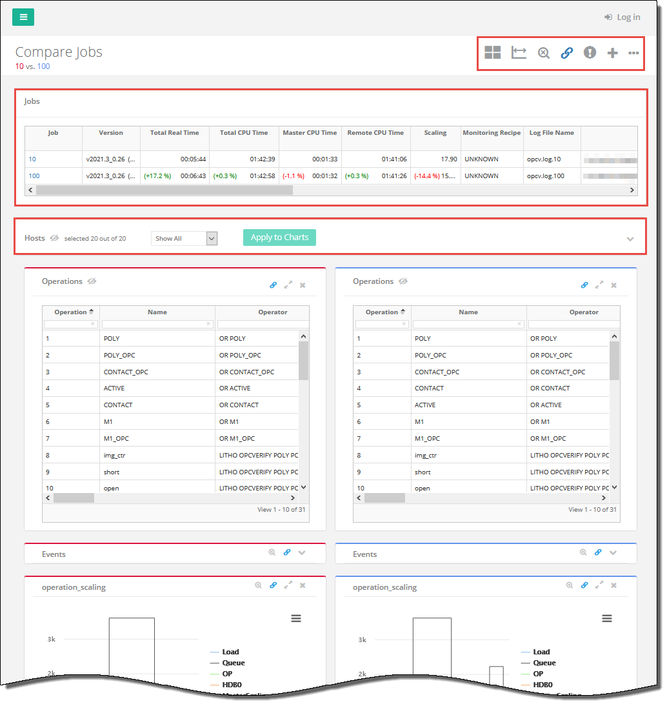
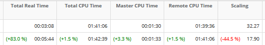
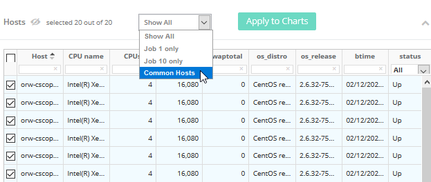
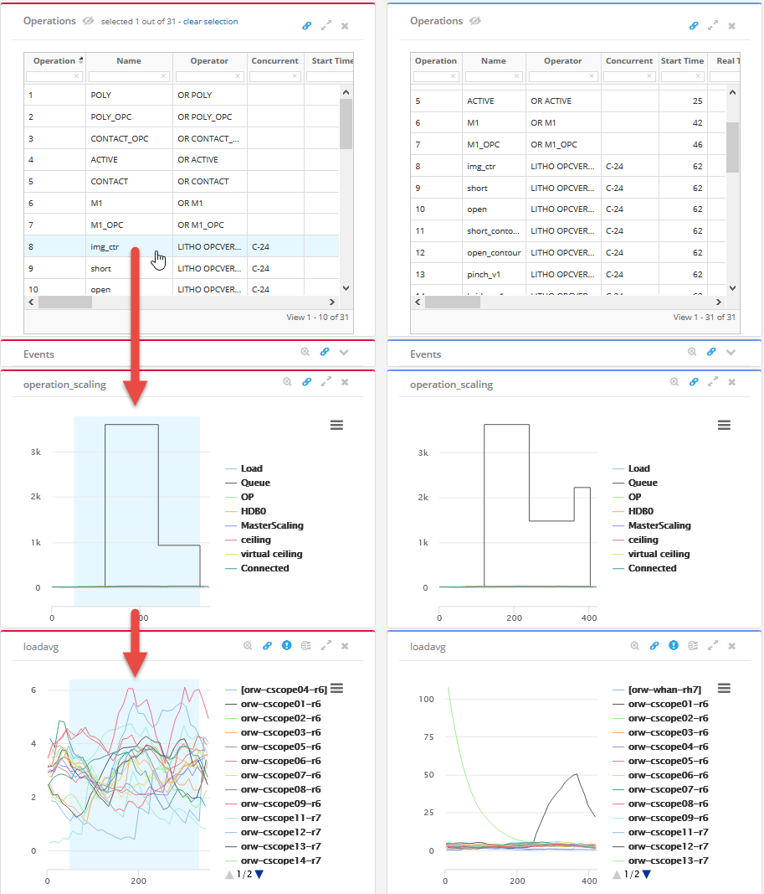
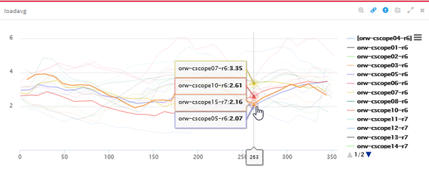

You can
use the CalScope dashboard to compare job run time and scalability
along with underlying hardware load/performance. This is especially
useful to analyze slow runs and to compare benchmarks.
Procedure
- In the Jobs page, click the dropdown icon
at the bottom‑center of the table to select the number of job records
to display as shown in Figure 1. The default
is 50 job records maximum per page.
- To compare detailed job information for
two jobs, choose two job IDs in the Job column of the table and
click Compare.
Note: You can only compare two jobs
at a time. Choosing more than two jobs will display a warning popup.
Figure 1. CalScope Job Selection and Compare
The Compare Jobs page opens and displays the information
for the selected job IDs.
Figure 2. CalScope Compare Jobs Page
- The Jobs table displays useful comparisons of
the two jobs, including CPU time, scaling, and so on, with differences
shown in red or green percentages.
Figure 3. Job Comparisons
- The Hosts section enables you to control which
hosts are shown in the hardware plots. Click on
the right of the Hosts section to expand it.
By default, all hosts
are shown (Show All). You can also choose to display only Common
Hosts (hosts in both jobs), just hosts from Job 1, or just hosts
from Job 2. In addition, you can filter using the fields in each
of the table headers.
Figure 4. Controlling Which Hosts to Display in Plots
- Control
the chart features using the icons in the upper‑right corner of
the Compare Jobs page (shown left to right):
- Switch View — Switches the chart
views between horizontally and vertically stacked orientation.
- Common
Axis — Toggles the display of the x‑ and y‑axis scales
for runtime and scalability comparison.
- Reset Zoom — Resets the zoom
(out) across all charts.
- Link
Charts — Toggles the linking functionality across all
charts.
- Toggle global threshold
boxes — Toggles all the alert threshold box settings
across all charts.
- Add Plots —
Opens the Add Plots window where you can select different metrics for
plotting.
- Chart (ellipses (…)) —
Accesses the following chart options:
X-Axis labels —
Changes the x-axis between Elapsed Time, Date Time, and Epoch Time.
Click on Operation —
Changes what happens when you click on the charts.
Chart Legend (Monitor Host) —
Toggles the visibility of the chart legends.
Chart Tooltip (Monitor Host) —
Toggles the visibility of tooltips when mousing over charts.
Show aggregated charts if #host> —
If the number of hosts exceed this specified value, the charts will
be aggregated.
- Click on a row in the Operations table to
highlight the corresponding area in the charts.
Figure 5. Highlight an Operation
- Mouseover the charts to view the information
about each item and click on the items to highlight the corresponding
operations in the Operations table.
Figure 6. Mouseover the Chart
Results
You have used table and chart functions in
the CalScope dashboard to selectively compare two jobs and control
how it is displayed.